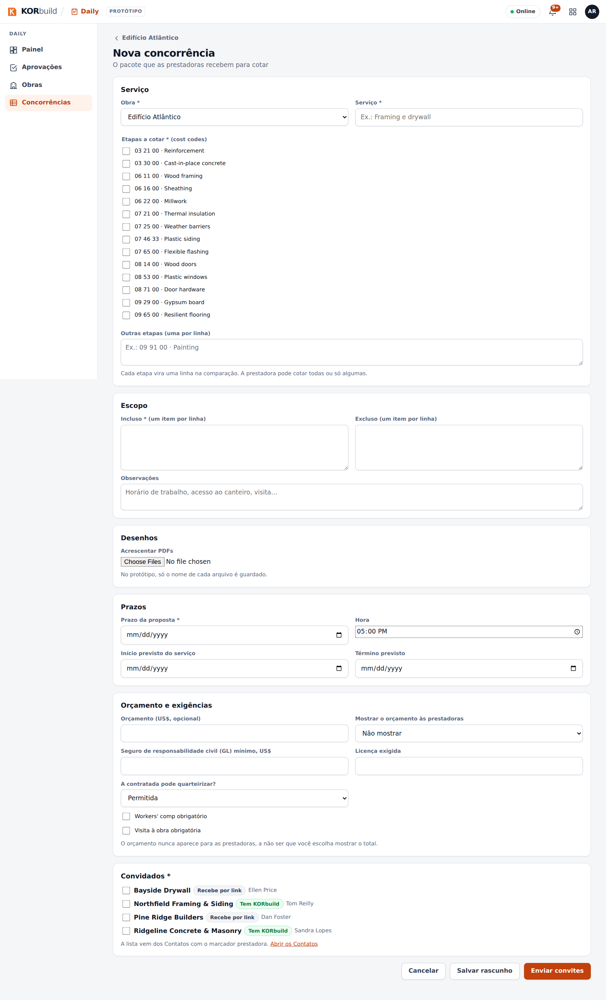
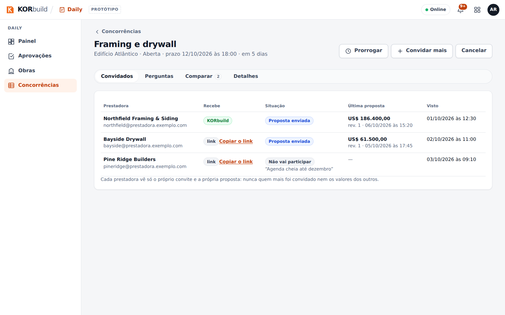
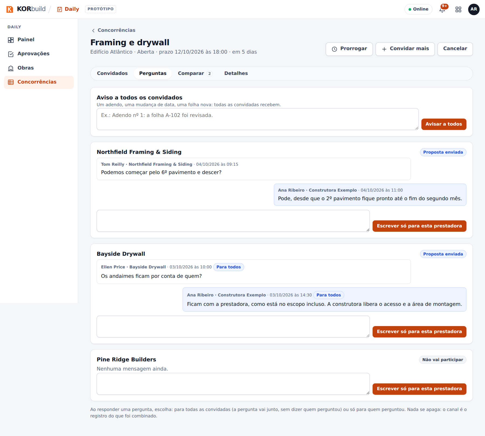
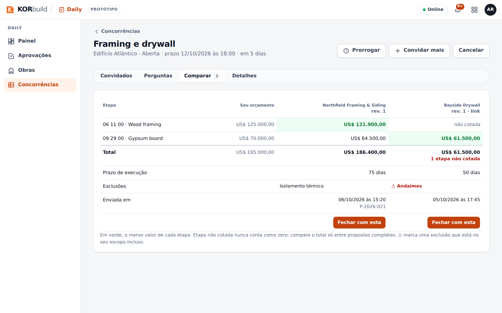
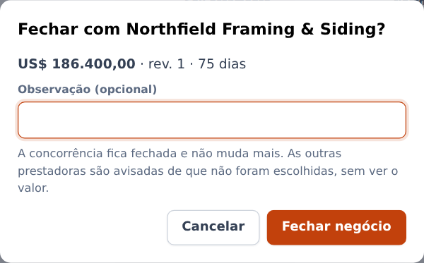
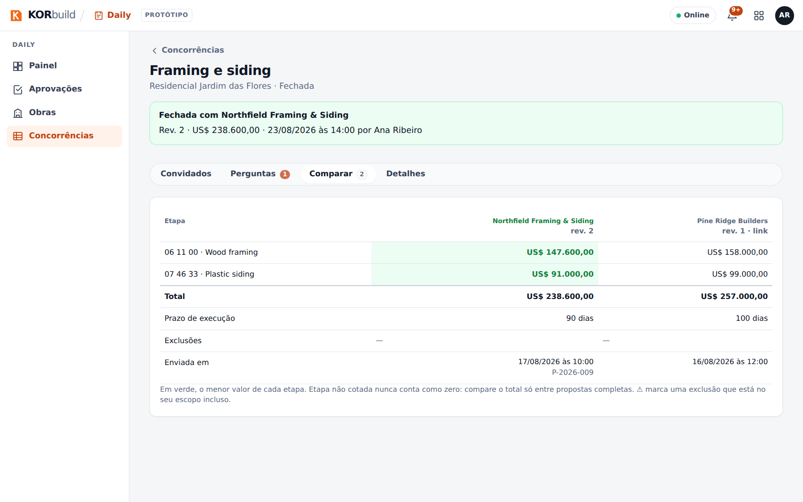
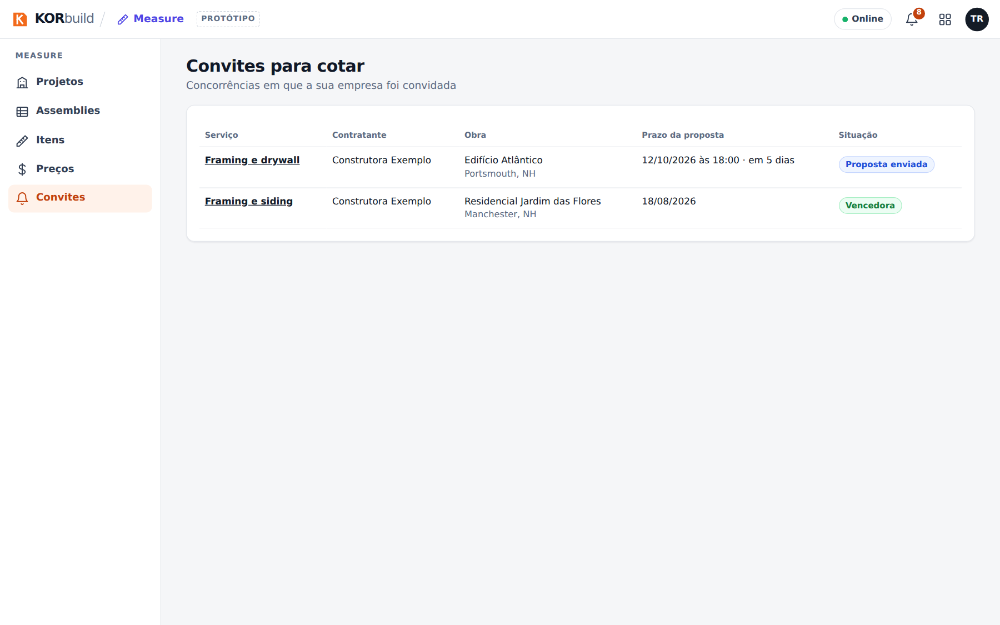
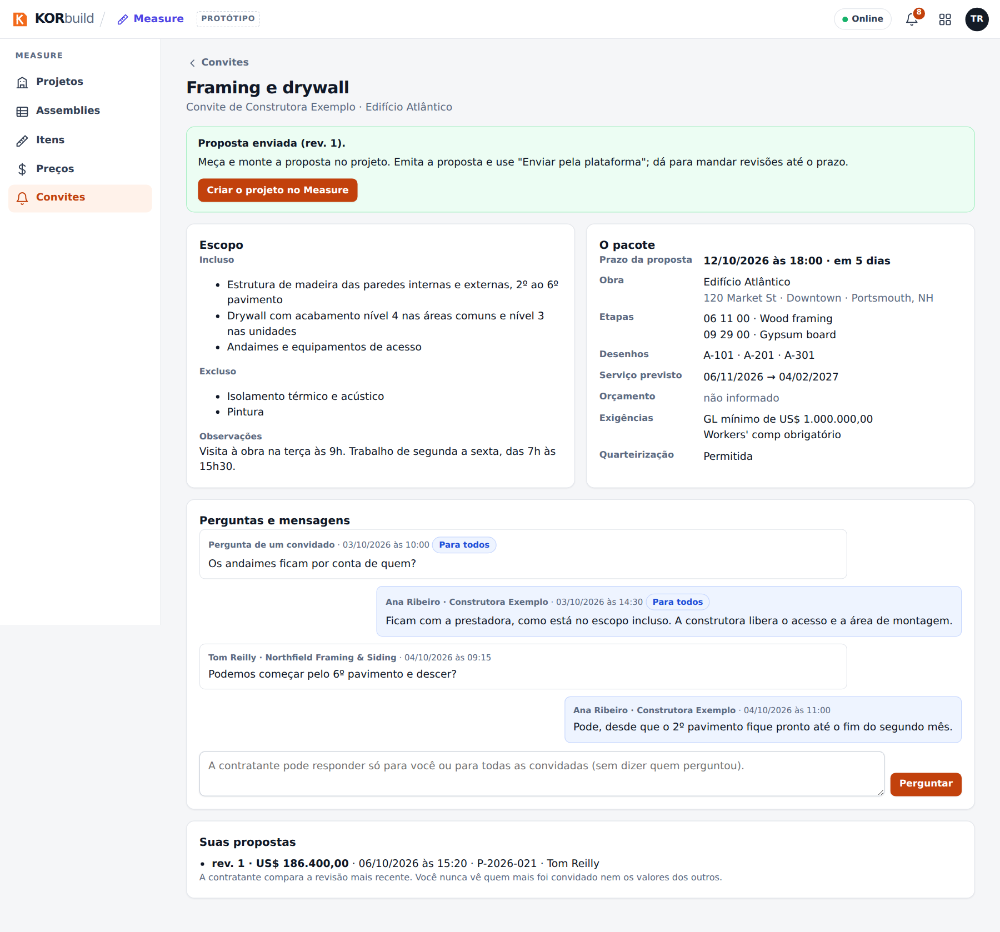
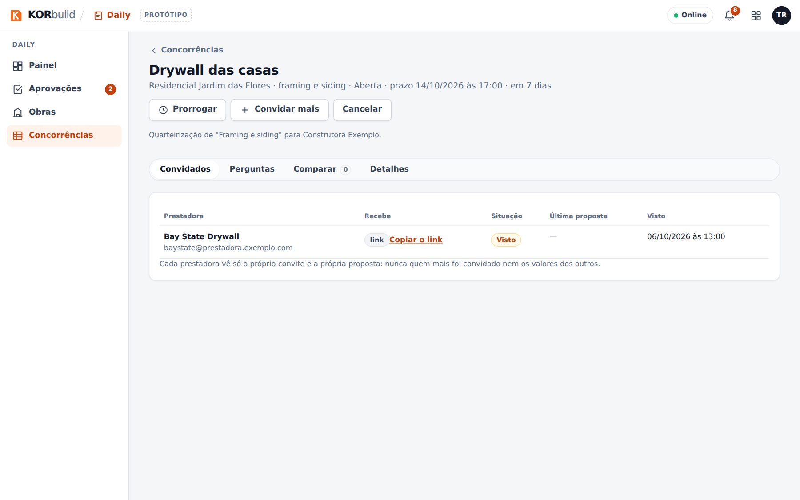
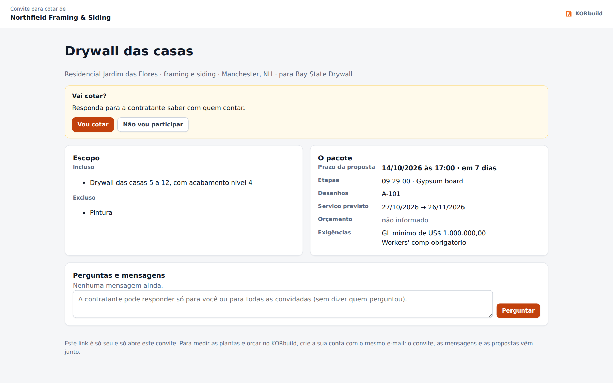

Passo a passo. As capturas são de uma conta de demonstração com dados de exemplo: Ana Ribeiro (administradora da Construtora Exemplo) manda e fecha, Tom Reilly (administrador da Northfield Framing & Siding) cota, e a Bay State Drywall responde pelo link, sem conta.
Mandar uma concorrência
Para que serve: convidar empresas para cotar um serviço.
Quem pode fazer
Quem tem Fazer concorrências e fechar (perfis padrão: Administrador e Gestor de obras).
Abra Concorrências no menu do Measure Takeoff (ou Cotar com prestadoras num projeto). A lista tem as abas Abertas, Para fechar, Rascunhos, Fechadas e Todas.

- Clique em Nova concorrência.
- Preencha o pacote:
- Serviço: o projeto e um nome (ex.: Framing e drywall).
- Etapas a cotar: marque as que valem (vêm do seu catálogo e dos fornecedores) ou digite outras. Cada uma vira uma linha na comparação.
- Escopo Incluso e Excluso, um item por linha; observações (horário, acesso ao canteiro, visita).
- Desenhos: os PDFs.
- Prazos: prazo da proposta com hora, início e término previstos.
- Orçamento e exigências: um orçamento opcional e se ele aparece, seguro GL mínimo, licença, workers' comp, visita obrigatória e se a contratada pode quarteirizar.
- Convidados: empresas dos seus Contatos. Cada uma diz Tem KORbuild ou Recebe por link.
- Clique em Enviar convites. Se faltar algo, o rascunho fica salvo e a tela diz o que falta.

Acompanhar as convidadas
A página da concorrência abre em Convidados: cada empresa, como recebe (KORbuild ou link), a situação (Convite enviado, Visto, Vai cotar, Não vai participar com o motivo, Proposta enviada), a última proposta e quando viu o convite.

- Prorrogar: um novo prazo, depois do atual; as convidadas mandam propostas até lá.
- Convidar mais: empresas ainda não convidadas.
- Cancelar: com motivo; as convidadas são avisadas.
- Copiar o link: para a convidada sem conta.
Responder as perguntas
A aba Perguntas tem uma conversa por convidada, e quantas perguntas estão sem resposta.
- Clique em Responder embaixo da pergunta.
- Escreva a resposta e escolha Todas as convidadas (a pergunta vai junto, sem dizer quem perguntou) ou Só para quem perguntou.
Use Avisar a todos para um adendo, uma mudança de data ou uma folha nova.

Comparar e fechar
Comparar mostra uma coluna por proposta e uma linha por etapa, ao lado do seu orçamento:
- em verde, o menor valor de cada etapa;
- não cotada quando a empresa deixou uma etapa sem preço — compare o total só entre propostas completas;
- prazo de execução, exclusões (⚠ quando a exclusão está no seu escopo incluso), data e número da proposta.

Clique em Fechar com esta na coluna escolhida. A confirmação avisa sobre etapas não cotadas e exclusões no escopo. Depois de Fechar negócio, a concorrência fica fechada e não muda mais; as outras são avisadas de que não foram escolhidas, sem o valor.
Se a concorrência saiu de um projeto seu que ainda está em orçamento, ela só fecha depois que você ganhar esse projeto e criar a obra dele (Settings › Obras, ou Criar obra a partir deste projeto).


Cotar quando você é convidada
Para que serve: responder um convite e mandar a proposta sem sair do KORbuild.
Quem pode fazer
Quem tem Responder convites e enviar propostas (perfis padrão: Administrador e Gestor de obras), numa empresa com o Measure Takeoff.
- Abra Measure Takeoff › Convites (o sininho também avisa). Abra o convite: o pacote, o prazo, o orçamento se a contratante escolheu mostrar.
- Clique em Vou cotar — o KORbuild cria um projeto no Measure Takeoff com a contratante, o endereço e o prazo — ou em Não vou participar, com um motivo opcional que a contratante vê.
- Meça, ponha os preços e emita a proposta no projeto, como sempre.
- Em Propostas emitidas, clique em Enviar pela plataforma. O diálogo mostra como as linhas vão por etapa, o que vai como outros itens e o que fica não cotada; informe o prazo de execução e as exclusões e envie.
- Para mudar algo, emita de novo e envie: vira a revisão seguinte, até o prazo.


Quando você vence, o convite diz Você venceu esta concorrência e oferece Criar obra a partir deste projeto: a obra nasce já ligada à obra da contratante.
Quarteirização
Uma empresa pode contratar outra para parte do serviço, com as mesmas telas. No seu projeto do Measure Takeoff, Cotar com prestadoras › Nova concorrência. O prazo precisa ser anterior ao seu. Em Comparar, Usar no meu orçamento põe o preço da subcontratada na proposta do seu projeto (como outros itens, com as suas margens). Você só fecha depois de ganhar e criar a obra.
Se a empresa que contratou você pediu aprovação, Fechar envia um pedido a ela: ela vê só a empresa que você escolheu, nunca o valor, e aprova ou recusa. Se ela não permite quarteirizar, a concorrência não é enviada.

A página do link (sem conta)
Uma empresa sem KORbuild abre o link pessoal e, sem login: vê o pacote, responde Vou cotar ou Não vou participar, pergunta e manda a proposta com o PDF, o total (e, se quiser, o valor por etapa), o prazo de execução e as exclusões.

Mensagens e alertas
| Mensagem | O que significa | O que fazer |
|---|---|---|
| Falta: … | O rascunho não está completo. | Preencha o que aparece e envie. |
| O prazo da proposta já venceu. | Não se aceitam mais propostas. | A contratante prorroga, ou compara e fecha. |
| O total precisa ser a soma dos valores por etapa. | A proposta por etapa não fecha a conta. | Corrija os valores ou deixe a etapa em branco (não cotada). |
| Esta concorrência saiu de um projeto em orçamento… | Não dá para fechar antes de ganhar. | Ganhe o projeto e crie a obra antes. |
| A contratante desta obra não permite quarteirizar. | A concorrência de cima não permite. | Converse com quem contratou você. |